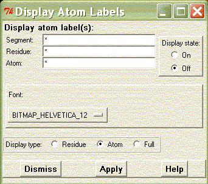

**************************************************************************
Atom label widget
Leif Laaksonen CSC 2003
**************************************************************************
Add atom labels to a selected number of atoms. Use "*" in all input fields to display all atom labels or select a smaller number of atoms. Click the display state to "On" and click the apply button to show the selected atom labels.
It is also possible to select the find, form the pull-down menu, in which the atom labels are displayed.
There are three different display levels to select from.

**************************************************************************
LUL/2003
**************************************************************************